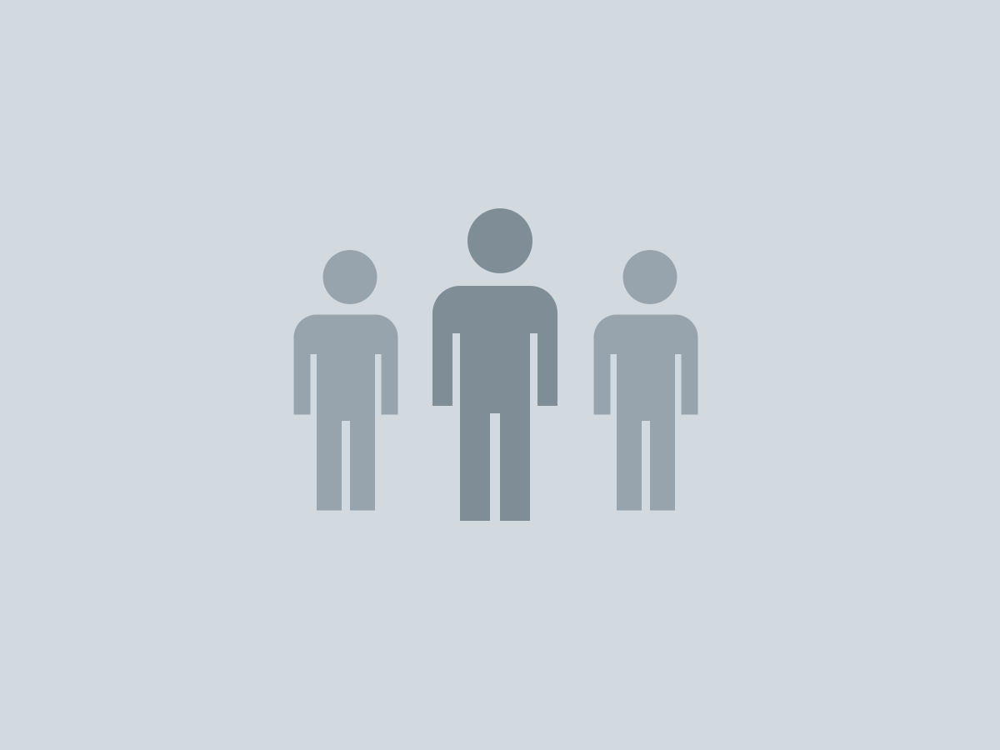

Zhixing Nursing Research Lab
以實證護理與臨床教育研究，回應病人與照護者每天面對的問題。

About
我們相信好的照護來自好的問題。研究室從臨床現場出發，和病人、家屬與護理同仁一起找出值得研究的問題。
研究室成立於 2018 年（範例），結合量性與質性方法，探討慢性病照護、護理教育與數位健康介入的成效。
（範例）我們與醫院護理部、社區健康中心長期合作，讓研究成果回到病房與社區，成為護理師日常可用的工具。
News
2026.09.15
（範例）歡迎 115 學年度新進研究生加入研究室。
2026.06.02
（範例）王小明同學於護理研討會獲得優秀論文獎。
2026.03.20
（範例）研究室獲國科會計畫補助，開始招募研究助理。
Join Us
我們每年招收碩士班與博士班研究生，也歡迎護理師以研究助理身分參與計畫。